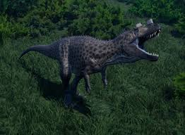

цератозавр
Цератозавр мав типовий для великих динозаврів-тероподів план тіла[1]. Він пересувався на потужних задніх ногах, тоді як його руки були редуковані. Зразок USNM 4735, перший знайдений скелет і голотип Ceratosaurus nasicornis, був особиною довжиною 5,3 м або 5,69 м за різними даними[2][3]. Чи була ця тварина повністю дорослою, досі невідомо[4]. Отніел Чарльз Марш у 1884 році припустив, що цей екземпляр важив приблизно вдвічі менше, ніж тогочасний алозавр[5]. У більш пізніх розрахунках цей показник був переглянутий до 418 кг, 524 кг або 670 кг[6]. Перший зразок, голотип USNM 4735, був знайдений і розкопаний фермером Маршаллом Паркером Фелчем у 1883 і 1884 роках[11]. Знайдений зчленованим, з кістками, все ще з'єднаними одна з одною, він був майже цілим, включаючи череп. Відсутні значні частини: невідома кількість хребців, всі ребра тулуба, окрім останніх, плечові кістки, дистальні фаланги пальців обох рук, більша частина правої руки, більша частина лівої ноги та більша частина стоп[2]. Зразок був знайдений у твердому пісковику, що призвело до того, що череп і хребет були сильно деформовані під час скам'яніння[2]. Місце знахідки, розташоване в районі Гарден-парку на північ від Каньйон-Сіті, штат Колорадо, і відоме як Фелч-Кар'єр 1, вважається одним з найбагатших місць знахідок викопних решток формації Моррісон. Численні скам'янілості динозаврів були знайдені в цьому кар'єрі ще до відкриття цератозавра, зокрема майже повний екземпляр алозавра (USNM 4734) в 1883 та 1884 роках. Після завершення розкопок зразок був відправлений до Музею природничої історії Пібоді в Нью-Гейвені, де його вивчав Марш, який у 1884 році описав його як новий рід і вид Ceratosaurus nasicornis[5][2]. Назву Ceratosaurus можна перекласти як «рогатий ящір» (від грец. κερας/κερατος, keras/keratos — «ріг» і σαυρος/sauros — «ящір»)[7] та nasicornis — «носовий ріг» (від лат. nasus — «ніс» і cornu — «ріг»)[12]. Враховуючи повноту зразка, нещодавно описаний рід був на той час найвідомішим тероподом, виявленим в Америці. У 1898—1899 роках зразок було передано до Національного музею природничої історії у Вашингтоні, округ Колумбія, разом з багатьма іншими скам'янілостями, вперше описаними Маршем. Лише частина цього матеріалу була повністю підготовлена, коли він прибув до Вашингтона. Подальша підготовка тривала з 1911 до кінця 1918 року. Під час пакування та транспортування з Нью-Гейвена до Вашингтона екземпляр цератозавра був дещо пошкоджений[2]. У 1920 році Чарльз Гілмор опублікував докладний опис цього та інших зразків тероподів, отриманих з Нью-Гейвена, включно з майже повним зразком алозавра, знайденим у тому ж кар'єрі[2].